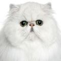
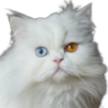
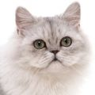
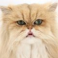
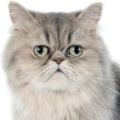
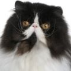
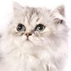
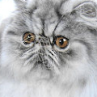

🐈Longhair Cat Breeds🐈⬛
🢔 Cat Breeds
🢔 Catlopedia Home
🢔 Petlopedia Home

Persian-Solid

Persian-Odd-Eyed
Persian-Cameo

Persian-Chinchilla

Persian-Golden

Persian-Pewter

Pers-Cameo Bicolor

Pers-Shaded Silver

Pers-Silver Tabby
[1]
[2]
[3]